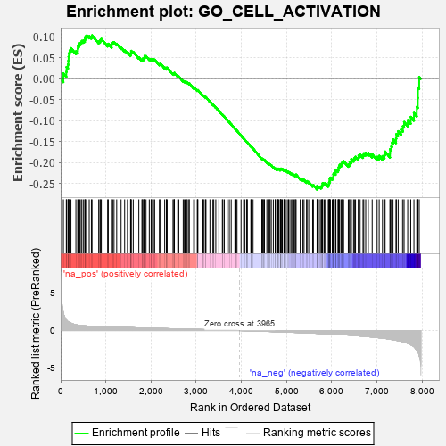
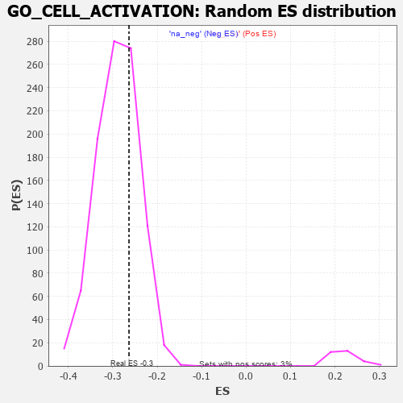

| | | Dataset | 7d |
| Phenotype | NoPhenotypeAvailable |
| Upregulated in class | na_neg |
| GeneSet | GO_CELL_ACTIVATION |
| Enrichment Score (ES) | -0.26356104 |
| Normalized Enrichment Score (NES) | -0.91068876 |
| Nominal p-value | 0.6958763 |
| FDR q-value | 0.94140655 |
| FWER p-Value | 1.0 |
Table: GSEA Results Summary

Fig 1: Enrichment plot: GO_CELL_ACTIVATION
Profile of the Running ES Score & Positions of GeneSet Members on the Rank Ordered List
| PROBE | GENE SYMBOL | GENE_TITLE | RANK IN GENE LIST | RANK METRIC SCORE | RUNNING ES | CORE ENRICHMENT | | 1 | RAC2 | | | 60 | 2.442 | 0.0132 | No |
| 2 | GLB1 | | | 125 | 1.416 | 0.0170 | No |
| 3 | SP3 | | | 131 | 1.391 | 0.0283 | No |
| 4 | SPI1 | | | 162 | 1.182 | 0.0345 | No |
| 5 | DGAT1 | | | 171 | 1.146 | 0.0433 | No |
| 6 | FOXF1 | | | 176 | 1.136 | 0.0525 | No |
| 7 | PYGB | | | 183 | 1.114 | 0.0613 | No |
| 8 | BCL3 | | | 202 | 1.047 | 0.0679 | No |
| 9 | RHOH | | | 228 | 0.987 | 0.0731 | No |
| 10 | DLL1 | | | 337 | 0.760 | 0.0657 | No |
| 11 | SOX13 | | | 380 | 0.717 | 0.0664 | No |
| 12 | PLD1 | | | 381 | 0.716 | 0.0725 | No |
| 13 | BAX | | | 387 | 0.711 | 0.0780 | No |
| 14 | NBN | | | 405 | 0.696 | 0.0817 | No |
| 15 | MLH1 | | | 423 | 0.679 | 0.0853 | No |
| 16 | ERCC1 | | | 453 | 0.660 | 0.0873 | No |
| 17 | LRP1 | | | 470 | 0.648 | 0.0907 | No |
| 18 | THOC1 | | | 507 | 0.627 | 0.0915 | No |
| 19 | PKN1 | | | 535 | 0.619 | 0.0933 | No |
| 20 | SRF | | | 542 | 0.615 | 0.0977 | No |
| 21 | JMJD6 | | | 553 | 0.613 | 0.1017 | No |
| 22 | ILF2 | | | 579 | 0.603 | 0.1036 | No |
| 23 | GLMN | | | 632 | 0.583 | 0.1019 | No |
| 24 | FAF2 | | | 680 | 0.566 | 0.1007 | No |
| 25 | XRCC6 | | | 694 | 0.560 | 0.1038 | No |
| 26 | PPIE | | | 842 | 0.521 | 0.0892 | No |
| 27 | IGBP1 | | | 869 | 0.514 | 0.0903 | No |
| 28 | PYGL | | | 882 | 0.510 | 0.0931 | No |
| 29 | HDAC5 | | | 900 | 0.506 | 0.0952 | No |
| 30 | AKT1 | | | 1040 | 0.476 | 0.0813 | No |
| 31 | MEF2C | | | 1054 | 0.473 | 0.0837 | No |
| 32 | SRC | | | 1128 | 0.459 | 0.0782 | No |
| 33 | FIBP | | | 1129 | 0.458 | 0.0821 | No |
| 34 | NCK2 | | | 1131 | 0.458 | 0.0859 | No |
| 35 | PSMD7 | | | 1152 | 0.454 | 0.0872 | No |
| 36 | PSMD2 | | | 1181 | 0.450 | 0.0874 | No |
| 37 | KAT7 | | | 1240 | 0.440 | 0.0837 | No |
| 38 | NKAP | | | 1337 | 0.422 | 0.0749 | No |
| 39 | P2RY1 | | | 1416 | 0.407 | 0.0683 | No |
| 40 | TIMP2 | | | 1478 | 0.394 | 0.0638 | No |
| 41 | SOS1 | | | 1547 | 0.384 | 0.0583 | No |
| 42 | QSOX1 | | | 1550 | 0.382 | 0.0613 | No |
| 43 | DCAF1 | | | 1559 | 0.381 | 0.0635 | No |
| 44 | SOCS6 | | | 1560 | 0.381 | 0.0668 | No |
| 45 | SRP14 | | | 1606 | 0.373 | 0.0642 | No |
| 46 | KMT2E | | | 1730 | 0.350 | 0.0512 | No |
| 47 | FNIP1 | | | 1798 | 0.338 | 0.0455 | No |
| 48 | ABR | | | 1812 | 0.335 | 0.0467 | No |
| 49 | MSH2 | | | 1819 | 0.334 | 0.0487 | No |
| 50 | TCF7 | | | 1848 | 0.328 | 0.0479 | No |
| 51 | AP1M1 | | | 1853 | 0.327 | 0.0502 | No |
| 52 | PSMD6 | | | 1858 | 0.326 | 0.0525 | No |
| 53 | SMAD4 | | | 1860 | 0.326 | 0.0551 | No |
| 54 | PAK3 | | | 1889 | 0.322 | 0.0543 | No |
| 55 | ARMC8 | | | 1961 | 0.312 | 0.0478 | No |
| 56 | EXO1 | | | 2002 | 0.304 | 0.0452 | No |
| 57 | RAF1 | | | 2011 | 0.303 | 0.0468 | No |
| 58 | HMCES | | | 2036 | 0.300 | 0.0462 | No |
| 59 | IRF4 | | | 2054 | 0.298 | 0.0466 | No |
| 60 | LRRC7 | | | 2080 | 0.294 | 0.0459 | No |
| 61 | SYK | | | 2186 | 0.278 | 0.0347 | No |
| 62 | ATAD5 | | | 2197 | 0.277 | 0.0357 | No |
| 63 | MLEC | | | 2221 | 0.273 | 0.0351 | No |
| 64 | YPEL5 | | | 2302 | 0.259 | 0.0270 | No |
| 65 | ANO6 | | | 2339 | 0.255 | 0.0245 | No |
| 66 | DOCK8 | | | 2341 | 0.254 | 0.0266 | No |
| 67 | MIF | | | 2357 | 0.252 | 0.0268 | No |
| 68 | ZC3H8 | | | 2486 | 0.229 | 0.0122 | No |
| 69 | HUWE1 | | | 2506 | 0.225 | 0.0117 | No |
| 70 | MANBA | | | 2514 | 0.225 | 0.0127 | No |
| 71 | TLR1 | | | 2517 | 0.224 | 0.0143 | No |
| 72 | QPCT | | | 2591 | 0.215 | 0.0067 | No |
| 73 | VAV3 | | | 2614 | 0.210 | 0.0057 | No |
| 74 | PHB2 | | | 2712 | 0.197 | -0.0052 | No |
| 75 | RORA | | | 2730 | 0.193 | -0.0057 | No |
| 76 | PPIA | | | 2754 | 0.190 | -0.0070 | No |
| 77 | MAGT1 | | | 2780 | 0.186 | -0.0087 | No |
| 78 | NSD2 | | | 2784 | 0.185 | -0.0075 | No |
| 79 | FER | | | 2803 | 0.183 | -0.0082 | No |
| 80 | PA2G4 | | | 2840 | 0.177 | -0.0114 | No |
| 81 | CAND1 | | | 2845 | 0.177 | -0.0104 | No |
| 82 | CDK13 | | | 2944 | 0.158 | -0.0217 | No |
| 83 | RAB10 | | | 2952 | 0.157 | -0.0213 | No |
| 84 | BTK | | | 2958 | 0.156 | -0.0206 | No |
| 85 | WNT4 | | | 3023 | 0.146 | -0.0276 | No |
| 86 | TLN1 | | | 3030 | 0.145 | -0.0271 | No |
| 87 | LEF1 | | | 3037 | 0.144 | -0.0267 | No |
| 88 | ACLY | | | 3149 | 0.130 | -0.0399 | No |
| 89 | RAB4B | | | 3157 | 0.129 | -0.0397 | No |
| 90 | AHR | | | 3175 | 0.126 | -0.0408 | No |
| 91 | AP1G1 | | | 3210 | 0.121 | -0.0442 | No |
| 92 | PRDX4 | | | 3214 | 0.120 | -0.0436 | No |
| 93 | SMAD3 | | | 3303 | 0.105 | -0.0540 | No |
| 94 | SMAD7 | | | 3369 | 0.093 | -0.0616 | No |
| 95 | DDX3X | | | 3388 | 0.091 | -0.0632 | No |
| 96 | AP2A2 | | | 3433 | 0.085 | -0.0682 | No |
| 97 | FES | | | 3501 | 0.077 | -0.0762 | No |
| 98 | GPR18 | | | 3578 | 0.063 | -0.0855 | No |
| 99 | MAPK3 | | | 3589 | 0.062 | -0.0862 | No |
| 100 | CBL | | | 3621 | 0.056 | -0.0897 | No |
| 101 | CD180 | | | 3686 | 0.046 | -0.0976 | No |
| 102 | SYT11 | | | 3732 | 0.036 | -0.1031 | No |
| 103 | SBNO2 | | | 3774 | 0.032 | -0.1082 | No |
| 104 | DGKQ | | | 3856 | 0.020 | -0.1185 | No |
| 105 | DGKZ | | | 3879 | 0.015 | -0.1212 | No |
| 106 | RAB18 | | | 3886 | 0.013 | -0.1219 | No |
| 107 | JAG2 | | | 3903 | 0.010 | -0.1238 | No |
| 108 | UBR4 | | | 3992 | -0.006 | -0.1352 | No |
| 109 | ATG5 | | | 4051 | -0.016 | -0.1425 | No |
| 110 | PDXK | | | 4054 | -0.016 | -0.1427 | No |
| 111 | CSF1 | | | 4074 | -0.019 | -0.1449 | No |
| 112 | MTOR | | | 4114 | -0.025 | -0.1498 | No |
| 113 | ABL1 | | | 4125 | -0.027 | -0.1508 | No |
| 114 | MSH6 | | | 4129 | -0.028 | -0.1510 | No |
| 115 | TIMP1 | | | 4209 | -0.043 | -0.1608 | No |
| 116 | GBF1 | | | 4215 | -0.044 | -0.1611 | No |
| 117 | PCID2 | | | 4258 | -0.051 | -0.1661 | No |
| 118 | SYVN1 | | | 4454 | -0.085 | -0.1906 | No |
| 119 | NDRG1 | | | 4456 | -0.085 | -0.1900 | No |
| 120 | LRRK2 | | | 4467 | -0.087 | -0.1905 | No |
| 121 | ERP44 | | | 4482 | -0.091 | -0.1916 | No |
| 122 | NPC2 | | | 4498 | -0.093 | -0.1927 | No |
| 123 | ILK | | | 4510 | -0.096 | -0.1933 | No |
| 124 | BAG6 | | | 4563 | -0.108 | -0.1991 | No |
| 125 | SNX27 | | | 4585 | -0.115 | -0.2008 | No |
| 126 | GATA3 | | | 4614 | -0.120 | -0.2034 | No |
| 127 | DLG5 | | | 4619 | -0.121 | -0.2029 | No |
| 128 | BRI3 | | | 4635 | -0.125 | -0.2038 | No |
| 129 | ITPR1 | | | 4661 | -0.130 | -0.2059 | No |
| 130 | RAP1B | | | 4706 | -0.140 | -0.2104 | No |
| 131 | DEGS1 | | | 4747 | -0.148 | -0.2143 | No |
| 132 | RAB5C | | | 4752 | -0.149 | -0.2135 | No |
| 133 | RAB14 | | | 4784 | -0.155 | -0.2162 | No |
| 134 | CD151 | | | 4791 | -0.156 | -0.2157 | No |
| 135 | ITFG2 | | | 4796 | -0.156 | -0.2148 | No |
| 136 | PLCL2 | | | 4807 | -0.159 | -0.2148 | No |
| 137 | P2RX4 | | | 4813 | -0.161 | -0.2140 | No |
| 138 | CNN2 | | | 4828 | -0.163 | -0.2144 | No |
| 139 | DLG1 | | | 4860 | -0.169 | -0.2170 | No |
| 140 | OSTF1 | | | 4864 | -0.170 | -0.2159 | No |
| 141 | RAB24 | | | 4868 | -0.171 | -0.2149 | No |
| 142 | ULK3 | | | 4873 | -0.171 | -0.2139 | No |
| 143 | CLU | | | 4889 | -0.174 | -0.2144 | No |
| 144 | VAMP8 | | | 4905 | -0.179 | -0.2148 | No |
| 145 | EP300 | | | 4941 | -0.186 | -0.2177 | No |
| 146 | XRCC5 | | | 4946 | -0.187 | -0.2166 | No |
| 147 | PRKDC | | | 4955 | -0.189 | -0.2160 | No |
| 148 | AOC1 | | | 4993 | -0.197 | -0.2191 | No |
| 149 | PURA | | | 5032 | -0.205 | -0.2223 | No |
| 150 | PDPK1 | | | 5043 | -0.207 | -0.2218 | No |
| 151 | RAP2C | | | 5073 | -0.218 | -0.2237 | No |
| 152 | MMP9 | | | 5108 | -0.227 | -0.2261 | No |
| 153 | STK10 | | | 5130 | -0.233 | -0.2269 | No |
| 154 | KCMF1 | | | 5160 | -0.239 | -0.2286 | No |
| 155 | ENPP4 | | | 5189 | -0.245 | -0.2301 | No |
| 156 | SMO | | | 5195 | -0.247 | -0.2286 | No |
| 157 | ATM | | | 5210 | -0.249 | -0.2283 | No |
| 158 | RAB7A | | | 5302 | -0.271 | -0.2377 | No |
| 159 | CD9 | | | 5319 | -0.277 | -0.2374 | No |
| 160 | ITPR3 | | | 5361 | -0.288 | -0.2403 | No |
| 161 | FZD5 | | | 5386 | -0.292 | -0.2409 | No |
| 162 | IST1 | | | 5442 | -0.305 | -0.2454 | No |
| 163 | FRK | | | 5451 | -0.307 | -0.2438 | No |
| 164 | RAB9B | | | 5489 | -0.316 | -0.2459 | No |
| 165 | SPHK1 | | | 5576 | -0.339 | -0.2541 | No |
| 166 | PGM1 | | | 5593 | -0.342 | -0.2532 | No |
| 167 | PSMD1 | | | 5674 | -0.367 | -0.2604 | Yes |
| 168 | CASP8 | | | 5678 | -0.369 | -0.2576 | Yes |
| 169 | CD63 | | | 5680 | -0.370 | -0.2546 | Yes |
| 170 | DGKI | | | 5725 | -0.384 | -0.2570 | Yes |
| 171 | TLR2 | | | 5761 | -0.395 | -0.2581 | Yes |
| 172 | VAMP7 | | | 5777 | -0.399 | -0.2567 | Yes |
| 173 | TRPC6 | | | 5784 | -0.401 | -0.2540 | Yes |
| 174 | LAMP1 | | | 5796 | -0.404 | -0.2520 | Yes |
| 175 | ADA | | | 5798 | -0.405 | -0.2486 | Yes |
| 176 | SNX4 | | | 5834 | -0.415 | -0.2496 | Yes |
| 177 | ATG7 | | | 5858 | -0.420 | -0.2490 | Yes |
| 178 | STK11 | | | 5922 | -0.443 | -0.2533 | Yes |
| 179 | CAP1 | | | 5935 | -0.447 | -0.2511 | Yes |
| 180 | VAPA | | | 5939 | -0.449 | -0.2476 | Yes |
| 181 | SURF4 | | | 5951 | -0.455 | -0.2451 | Yes |
| 182 | CXCR5 | | | 5954 | -0.456 | -0.2415 | Yes |
| 183 | PRDM1 | | | 5956 | -0.457 | -0.2377 | Yes |
| 184 | TTBK1 | | | 5969 | -0.460 | -0.2353 | Yes |
| 185 | XBP1 | | | 6011 | -0.475 | -0.2365 | Yes |
| 186 | HVCN1 | | | 6034 | -0.482 | -0.2352 | Yes |
| 187 | TRPC3 | | | 6035 | -0.483 | -0.2311 | Yes |
| 188 | RAC1 | | | 6036 | -0.484 | -0.2270 | Yes |
| 189 | FZD8 | | | 6051 | -0.490 | -0.2246 | Yes |
| 190 | DBNL | | | 6084 | -0.501 | -0.2244 | Yes |
| 191 | MMP25 | | | 6086 | -0.501 | -0.2203 | Yes |
| 192 | FLOT2 | | | 6092 | -0.504 | -0.2166 | Yes |
| 193 | PGM2 | | | 6137 | -0.515 | -0.2179 | Yes |
| 194 | RNF8 | | | 6147 | -0.518 | -0.2146 | Yes |
| 195 | ROCK1 | | | 6152 | -0.520 | -0.2107 | Yes |
| 196 | EGR1 | | | 6165 | -0.527 | -0.2077 | Yes |
| 197 | RAG1 | | | 6176 | -0.530 | -0.2045 | Yes |
| 198 | GYG1 | | | 6210 | -0.539 | -0.2041 | Yes |
| 199 | MVP | | | 6223 | -0.543 | -0.2010 | Yes |
| 200 | CDC42 | | | 6236 | -0.548 | -0.1979 | Yes |
| 201 | AP3D1 | | | 6261 | -0.558 | -0.1962 | Yes |
| 202 | NIT2 | | | 6365 | -0.603 | -0.2043 | Yes |
| 203 | APEH | | | 6393 | -0.613 | -0.2026 | Yes |
| 204 | PRDX6 | | | 6396 | -0.615 | -0.1976 | Yes |
| 205 | CSK | | | 6428 | -0.630 | -0.1962 | Yes |
| 206 | MALT1 | | | 6432 | -0.634 | -0.1911 | Yes |
| 207 | DYSF | | | 6481 | -0.654 | -0.1917 | Yes |
| 208 | DPP4 | | | 6501 | -0.663 | -0.1885 | Yes |
| 209 | VAMP2 | | | 6525 | -0.672 | -0.1857 | Yes |
| 210 | RNF41 | | | 6588 | -0.703 | -0.1877 | Yes |
| 211 | VWF | | | 6593 | -0.706 | -0.1822 | Yes |
| 212 | RABL3 | | | 6627 | -0.727 | -0.1802 | Yes |
| 213 | PAK1 | | | 6691 | -0.757 | -0.1819 | Yes |
| 214 | EGFR | | | 6708 | -0.765 | -0.1774 | Yes |
| 215 | DOK3 | | | 6751 | -0.786 | -0.1761 | Yes |
| 216 | ADAM9 | | | 6808 | -0.819 | -0.1764 | Yes |
| 217 | HEXB | | | 6894 | -0.864 | -0.1800 | Yes |
| 218 | CCR2 | | | 7003 | -0.939 | -0.1859 | Yes |
| 219 | PIBF1 | | | 7049 | -0.966 | -0.1834 | Yes |
| 220 | PTPRB | | | 7122 | -1.010 | -0.1841 | Yes |
| 221 | COTL1 | | | 7166 | -1.046 | -0.1807 | Yes |
| 222 | PTPRJ | | | 7180 | -1.054 | -0.1733 | Yes |
| 223 | PARP3 | | | 7289 | -1.158 | -0.1774 | Yes |
| 224 | ASTL | | | 7290 | -1.159 | -0.1675 | Yes |
| 225 | GRN | | | 7319 | -1.194 | -0.1609 | Yes |
| 226 | CYLD | | | 7333 | -1.206 | -0.1522 | Yes |
| 227 | PLAC8 | | | 7355 | -1.223 | -0.1445 | Yes |
| 228 | TPD52 | | | 7422 | -1.294 | -0.1419 | Yes |
| 229 | KLF5 | | | 7429 | -1.304 | -0.1315 | Yes |
| 230 | SHPK | | | 7469 | -1.360 | -0.1249 | Yes |
| 231 | CD22 | | | 7534 | -1.449 | -0.1208 | Yes |
| 232 | NLRC3 | | | 7574 | -1.515 | -0.1129 | Yes |
| 233 | ELF4 | | | 7600 | -1.551 | -0.1028 | Yes |
| 234 | TRPM2 | | | 7680 | -1.712 | -0.0984 | Yes |
| 235 | CASP3 | | | 7747 | -1.902 | -0.0906 | Yes |
| 236 | TRAF6 | | | 7818 | -2.157 | -0.0812 | Yes |
| 237 | FYN | | | 7881 | -2.622 | -0.0667 | Yes |
| 238 | PLCB1 | | | 7904 | -2.841 | -0.0452 | Yes |
| 239 | PSMD3 | | | 7907 | -2.887 | -0.0208 | Yes |
| 240 | ARRB1 | | | 7935 | -3.377 | 0.0047 | Yes |
Table: GSEA details [plain text format]

Fig 2: GO_CELL_ACTIVATION: Random ES distribution
Gene set null distribution of ES for GO_CELL_ACTIVATION